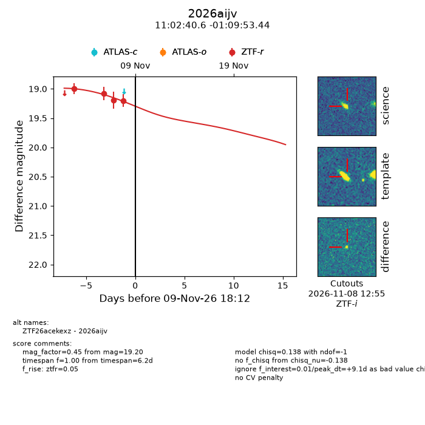
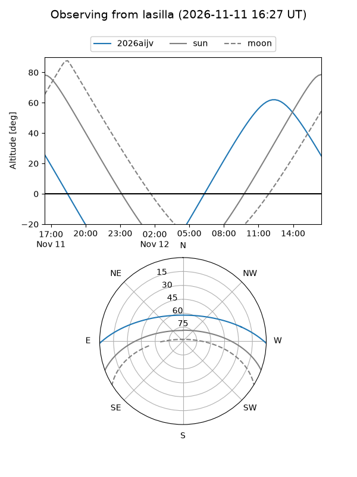
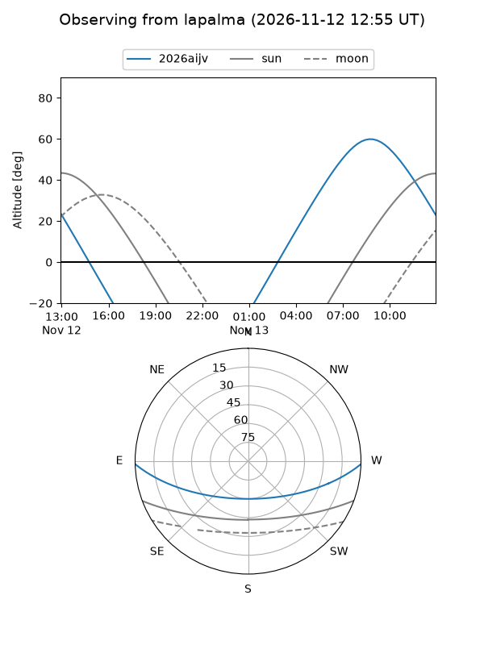
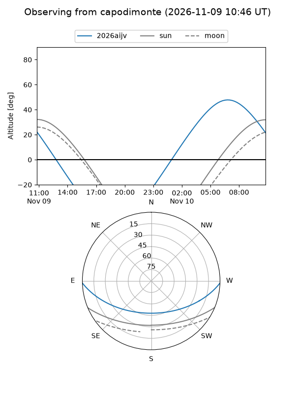
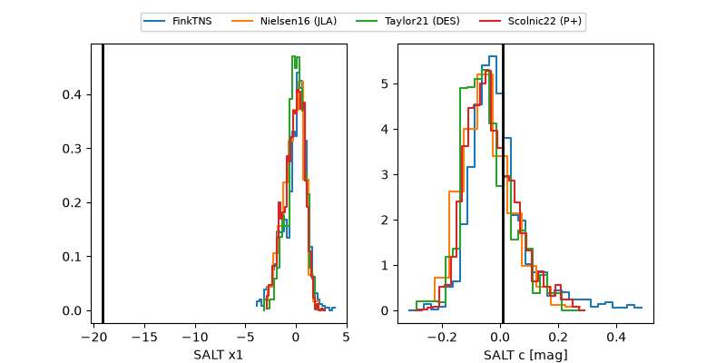

2026aijv
Target 2026aijv at 2026-11-09 18:14
Aliases and brokers:
FINK-ZTF: ztf.fink-portal.org/ZTF26acekexz
Lasair-ZTF: lasair-ztf.lsst.ac.uk/objects/ZTF26acekexz
ALeRCE-ZTF: alerce.online/object/ZTF26acekexz
YSE-PZ: ziggy.ucolick.org/yse/transient_detail/2026aijv
TNS name: wis-tns.org/object/2026aijv
Direct TNS query: direct search
alt names
ZTF26acekexz (ztf,fink_ztf)
2026aijv (tns,yse)
Coordinates:
equatorial (ra, dec) = 165.6691,-1.16484
equatorial (HMS+DMS) = 11:02:40.57,-01:09:53.44
galactic (l, b) = (255.7691,+51.46288)
Flags:
peak dt: +9.1
Photometry:
last ztfr=19.20
4 ztfr detections
Lightcurve

Visibility



Additional plots
